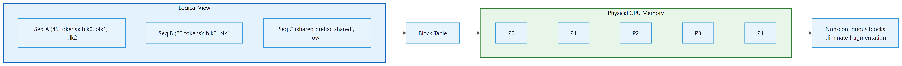

The KV cache is the model's short-term memory, and like all short-term memory, it grows without bound until something crashes. The entire field of memory optimization is basically teaching transformers to forget gracefully.
Quant, Forgetfully Graceful AI Agent
The hidden memory bottleneck. While the model weights occupy a fixed amount of GPU memory, the KV cache grows dynamically with every token generated. For a Llama 3 70B model serving a batch of 32 sequences at 8K context length, the KV cache alone requires over 80 GB of memory, often exceeding the weight memory itself. Optimizing how this cache is stored, shared, and evicted is the single most important lever for increasing throughput in LLM serving systems. This section covers the data structures and algorithms that make high-throughput serving possible. The attention mechanism from Section 2.3 explains why keys and values must be cached in the first place.
Prerequisites
This section builds on the self-attention mechanism from Section 3.1 (query, key, value projections and attention computation). GQA architecture details were introduced in Section 3.3 and applied in production models in Section 7.2; here we focus on the memory savings. Understanding of quantization from Section 9.1 provides context for KV cache quantization discussed later.
For GPU memory calculations, bandwidth analysis, and hardware selection guidance, see Section 6.1 (Hardware Requirements).

9.2.1 The KV Cache Explained
The reason heads can be safely shared at all (GQA, MQA) is the "redundancy hypothesis": Ainslie et al. (2023) and Shazeer (2019) measured the rank of the K and V projections in trained MHA models and found they live in a much lower-dimensional subspace than their h × d_k allocation suggests. Most heads encode similar key patterns with minor rotations, so collapsing them costs little quality. The query side, by contrast, exhibits genuine functional specialization across heads (induction, copy, syntax), so reducing Q-heads is much more damaging. GQA exploits this asymmetry: many distinct queries against few shared keys, which is also the structure of database joins. The architecture matches the latent factorization of attention.
The O(n²) complexity of uncached generation is worth making concrete. To generate token k, attention must compute K, V for all k positions and run attention against all k keys. Without caching, this happens fresh for each of n tokens we generate: 1 + 2 + ... + n = n(n+1)/2 = O(n²). What makes KV cache different from a general cache: its entries can never be invalidated. Key and value projections for position 5, given tokens 1-5, do not change when you generate position 6, 7, or 100. Past context is frozen. KV cache is not approximation or heuristic, it is lossless reuse of computation that cannot possibly differ. Memory cost (linear in sequence length × batch size) is the exact price for converting quadratic compute to linear.
You quantized your model to 4-bit and slashed its memory footprint by 4x. But inference is still slow, and GPU memory is still filling up. Why? Because the KV cache, not the model weights, has become your bottleneck.
In autoregressive generation, each new token attends to all previous tokens. The attention mechanism computes queries, keys, and values for each token. Without caching, generating the $t$-th token would require recomputing the keys and values for all $t-1$ previous tokens, making generation O(t²) in computation. This caching challenge is particularly important for multi-turn conversation systems, where context accumulates across many exchanges. The KV cache stores the key and value projections from all previous positions so that each new token only needs to compute its own query, key, and value, then attend against the cached keys and values.
Who: A platform engineer at a SaaS company running a Llama 3.1 70B chatbot serving 500 concurrent users.
Situation: The serving system used a naive pre-allocated KV cache strategy, reserving the maximum context length (8K tokens) for every request regardless of actual sequence length.
Problem: Most conversations used only 500 to 2,000 tokens, but the pre-allocation reserved 8K tokens per request. With 8 A100 GPUs, the system could only serve 24 concurrent sequences before running out of KV cache memory, forcing new requests to queue.
Dilemma: Reducing the maximum context length would break long conversations. Adding more GPUs was expensive ($50,000/month per additional node). They needed a software solution.
Decision: They migrated from their custom serving code to vLLM, which implements PagedAttention for dynamic KV cache allocation.
How: PagedAttention allocates KV cache memory in fixed-size blocks (like virtual memory pages in an OS), only allocating blocks as sequences grow. Completed sequences immediately release their blocks for reuse. The migration involved replacing the inference backend while keeping the same API layer.
Result: Concurrent serving capacity increased from 24 to 58 sequences on the same hardware (2.4x improvement). P99 latency dropped from 4.2 seconds to 1.8 seconds because fewer requests waited in the queue. Monthly infrastructure costs remained the same.
Lesson: KV cache memory management is often the single largest throughput bottleneck in LLM serving. PagedAttention (via vLLM or similar systems) can double or triple throughput with zero hardware changes.
For a model with $L$ layers, $n_{kv}$ key/value heads, head dimension $d_{h}$, sequence length $s$, and batch size $b$, the KV cache memory per sequence is:
The factor of 2 accounts for both keys and values. For a batch of $b$ sequences, multiply by $b$.
# Example 1: Calculate KV cache size for various models
def kv_cache_size_gb(
num_layers: int,
num_kv_heads: int,
head_dim: int,
seq_len: int,
batch_size: int = 1,
dtype_bytes: int = 2, # FP16 = 2 bytes
) -> float:
"""Calculate KV cache memory in GB."""
# 2 for K and V, both stored
total_bytes = (
2 * num_layers * num_kv_heads * seq_len * head_dim * dtype_bytes * batch_size
)
return total_bytes / (1024 ** 3)
# Llama 3.1 8B: 32 layers, 8 KV heads (GQA), head_dim=128
# Llama 3.1 70B: 80 layers, 8 KV heads (GQA), head_dim=128
models = {
"Llama 3.1 8B": {"layers": 32, "kv_heads": 8, "head_dim": 128},
"Llama 3.1 70B": {"layers": 80, "kv_heads": 8, "head_dim": 128},
"Llama 3.1 405B": {"layers": 126, "kv_heads": 8, "head_dim": 128},
}
print(f"{'Model':<20} {'Context':>8} {'Batch':>6} {'KV Cache (GB)':>14}")
print("-" * 52)
for name, cfg in models.items():
for seq_len in [4096, 8192, 32768, 131072]:
for batch in [1, 16, 64]:
mem = kv_cache_size_gb(
cfg["layers"], cfg["kv_heads"], cfg["head_dim"],
seq_len, batch
)
if batch == 1 or (seq_len == 8192):
print(f"{name:<20} {seq_len:>8} {batch:>6} {mem:>13.2f}")
print()# KV cache: store the K and V projections of every past position so we never
# recompute them. HuggingFace exposes this via the `past_key_values` argument.
import torch
from transformers import AutoModelForCausalLM, AutoTokenizer
tok = AutoTokenizer.from_pretrained("gpt2")
model = AutoModelForCausalLM.from_pretrained("gpt2")
model.eval()
input_ids = tok("The Eiffel Tower is", return_tensors="pt").input_ids
past_key_values = None
generated = input_ids
with torch.no_grad():
for _ in range(20):
# Only the LAST token participates in the new forward pass;
# the KV cache provides everything before it for free.
feed = generated if past_key_values is None else generated[:, -1:]
out = model(feed, past_key_values=past_key_values, use_cache=True)
past_key_values = out.past_key_values # carry forward
next_id = out.logits[:, -1, :].argmax(dim=-1, keepdim=True)
generated = torch.cat([generated, next_id], dim=1)
print(tok.decode(generated[0]))
# Without KV cache, generating n tokens is O(n^2); with it, generation is O(n).For Llama 3.1 70B (which requires about 140 GB for weights in FP16), serving a batch of 64 sequences at 8K context requires 160 GB just for the KV cache. This means the KV cache uses more memory than the model weights. This is why KV cache optimization is critical for high-throughput serving.
Why the KV cache becomes the dominant cost. At first glance, it seems strange that caching should be a problem: you are simply storing intermediate results to avoid redundant computation. The issue is scale. Each layer of the model produces a key vector and a value vector for every token in every sequence. For a model with 80 layers, even a modest batch of 16 sequences at 8K tokens requires 2 (K and V) x 80 x 16 x 8192 vectors, each 128-dimensional in FP16. This adds up to 40 GB, which is half the memory of an A100 GPU. The model weights are fixed, but the KV cache grows linearly with both batch size and sequence length. This is why optimizing KV cache memory is the single most impactful lever for increasing serving throughput, more important than quantizing the model weights themselves in many high-throughput scenarios. The reasoning models discussed in Section 8.1 make this problem even worse, because their extended thinking chains can generate thousands of additional tokens per query.
9.2.2 Why Inference Is Memory-Bandwidth-Bound
During the decode phase (generating one token at a time), each token requires reading all model weights and the full KV cache from GPU memory. The actual floating-point operations are minimal: for a single-token decode step, the arithmetic intensity (FLOPs per byte of memory accessed) is approximately 1. Modern GPUs have a ratio of compute to memory bandwidth of 100:1 or more (the H100 has 3958 TFLOPS of FP8 compute but only 3.35 TB/s of HBM bandwidth). This means the GPU spends most of its time waiting for data from memory, not computing. Reducing the amount of memory to read (through quantization and cache optimization) directly translates to higher throughput.
A quick back-of-the-envelope calculation makes the bottleneck vivid:
# Back-of-the-envelope: why LLM decode is memory-bound
weight_gb = 70e9 * 2 / 1e9 # 70B params in FP16 = 140 GB
bw_tb_s = 3.35 # H100 HBM bandwidth (TB/s)
time_read_ms = (weight_gb / 1e3) / bw_tb_s * 1000 # time to read all weights
compute_tflops = 989 # H100 FP16 Tensor Core TFLOPS
flops_per_token = 2 * 70e9 # ~140 GFLOPs per decode token
time_compute_ms = (flops_per_token / 1e12) / compute_tflops * 1000
print(f"Weight read time: {time_read_ms:.1f} ms per token")
print(f"Compute time: {time_compute_ms:.4f} ms per token")
print(f"Ratio: {time_read_ms / time_compute_ms:.0f}x memory-bound")
# The GPU spends ~300x longer waiting for data than computingThe memory-bandwidth bottleneck in LLM inference is a manifestation of what computer architects call the "memory wall," a term coined by Wulf and McKee in 1995. Their observation was that processor speeds were growing exponentially faster than memory bandwidth, creating an ever-widening gap. Three decades later, the same fundamental constraint dominates LLM serving: GPU compute has scaled to petaFLOPS, but memory bandwidth has not kept pace. This is ultimately a physics problem. Moving data across a chip requires energy proportional to distance, and the energy cost of a memory access is now roughly 100 to 1000 times the cost of a floating-point operation. The KV cache optimization techniques in this section are, at their core, strategies for working within this physical constraint by reducing the number of bytes that must traverse the memory hierarchy per generated token.
9.2.3 PagedAttention
PagedAttention treats KV cache like virtual memory. Each sequence holds a block table: a list of physical block indices, NOT a contiguous tensor. Each physical block holds 16 token KV entries; multiple sequences can share blocks via reference counting (e.g., a system prompt shared across thousands of requests has ref_count = N, copy-on-write triggers only when one sequence diverges).
# Input: logical KV-cache blocks per sequence, physical block pool, page size
# Output: block-table mapping logical to physical blocks with copy-on-write for shared prefixes
from dataclasses import dataclass
from dataclasses import field
@dataclass
class PhysicalBlock:
block_id: int
ref_count: int = 0 # >1 means shared, needs CoW
token_ids: list = field(default_factory=list)
@dataclass
class SequenceState:
seq_id: int
logical_blocks: list[PhysicalBlock] # the block table
Without paged attention, KV memory waste from fragmentation can be 30-60% of GPU RAM (over-allocated blocks for short sequences). With paged attention, fragmentation drops below 4% even under heavy multi-tenancy.
PagedAttention borrows the concept of virtual memory from operating systems, a technique that dates back to the 1960s. It took over 60 years for someone to apply this idea to GPU memory management for LLMs, proving once again that the most impactful innovations are often old ideas applied in new places.
Traditional serving systems pre-allocate a contiguous block of GPU memory for the KV cache of each request, sized for the maximum possible sequence length. This leads to massive internal fragmentation: if the max length is 8192 tokens but most sequences use only 500 tokens, over 90% of the allocated cache memory is wasted.
PagedAttention (Kwon et al., 2023), introduced in vLLM, borrows the concept of virtual memory and paging from operating systems. Instead of contiguous allocation, the KV cache is divided into fixed-size blocks (typically 16 tokens per block). A block table maps each sequence's logical KV positions to physical GPU memory blocks. Blocks are allocated on demand as the sequence grows.

For Hopper (H100/H200) hardware, install flash-attn v3 to get FlashAttention-3 kernels and the paged variant used by vLLM and SGLang. The kernel computes attention in tiled, fused passes that never materialize the full attention matrix, delivering 1.5-2x speedup over FlashAttention-2 and FP8 support on H100. Most serving stacks pick the right kernel automatically once the package is installed.
pip install flash-attn --no-build-isolation
from transformers import AutoModelForCausalLM
model = AutoModelForCausalLM.from_pretrained(
"meta-llama/Llama-3.1-8B-Instruct",
attn_implementation="flash_attention_2", # auto-upgrades to FA3 on H100
torch_dtype="bfloat16", device_map="auto",
)9.2.4 MHA, MQA, and GQA: Architectural Deep Dive
The choice of attention variant is one of the most consequential architectural decisions for serving efficiency. It determines how much memory the KV cache consumes per request, which in turn determines how many concurrent requests a GPU can handle. The attention mechanism basics are covered in Section 3.2 and Section 4.3; here we focus on the memory implications of each variant.
The original transformer uses layer normalization (MHA), where each attention head has its own separate set of key, value, and query projections. For a model with 32 attention heads, this means 32 independent K and V tensors per layer must be stored in the cache. Full expressiveness: each head can independently learn to attend to different syntactic or semantic relations. The cost is that the KV cache scales linearly with the number of heads.
Multi-Query Attention (MQA), introduced by Shazeer (2019), takes the opposite approach. All query heads share a single set of key and value projections. The query projections remain per-head (so the model can still ask different questions), but there is only one set of answers to consult. This reduces the KV cache by a factor equal to the number of query heads (32x for a 32-head model). The tradeoff is a measurable quality reduction on tasks requiring fine-grained distinction between different attention patterns, because all heads are forced to attend to the same compressed key/value representation.
Grouped-Query Attention (GQA), introduced by Ainslie et al. (2023) and used in Llama 2/3, Mistral, and Gemma, finds the practical sweet spot. Query heads are partitioned into G groups, and each group shares one set of KV heads. A typical configuration uses 32 query heads and 8 KV head groups (so 4 query heads share each KV pair). This yields a 4x KV cache reduction compared to MHA while preserving nearly all of MHA's modeling quality. (GQA's architectural design and its role in models like Llama 3 were introduced in Section 7.2; here we focus on the memory optimization implications.)

9.2.4.1 Memory Calculations for a 70B Model
To see why this choice matters in production, consider a 70B-class model with the parameters used by Llama 2 70B: 80 layers, 64 query heads, head dimension 128, and a sequence length of 4096 tokens. All values use FP16 (2 bytes per element). The formula from Section 1 applies, with the critical variable being the number of KV heads.
MHA (64 KV heads): 80 layers x 64 KV heads x 2 (K+V) x 128 dims x 4096 tokens x 2 bytes = 5,368,709,120 bytes, approximately 5.0 GB per request. For a batch of 8 concurrent requests, the KV cache alone consumes 40 GB, which is half the memory of an A100 GPU.
GQA with 8 KV groups (the actual Llama 2 70B configuration): 80 x 8 x 2 x 128 x 4096 x 2 = 671,088,640 bytes, approximately 0.625 GB per request. A batch of 8 requests now needs only 5 GB for the KV cache, an 8x reduction. This is what enables Llama 2 70B to run concurrently on a single A100.
MQA (1 KV head): 80 x 1 x 2 x 128 x 4096 x 2 = 83,886,080 bytes, approximately 0.078 GB per request. Dramatic savings, but quality is noticeably worse on tasks that benefit from diverse attention patterns, which is why GQA is the preferred choice in modern architectures.
| Attention Type | KV Heads | KV Cache / Request | Vs. MHA | Used By |
|---|---|---|---|---|
| MHA | 64 | ~5.0 GB | 1x (baseline) | GPT-2, GPT-3, OPT |
| GQA (8 groups) | 8 | ~0.625 GB | 8x savings | Llama 2/3 70B, Mistral, Gemma |
| GQA (4 groups) | 4 | ~0.31 GB | 16x savings | Some Qwen and DeepSeek configs |
| MQA | 1 | ~0.078 GB | 64x savings | Falcon, PaLM, StarCoder |
The empirical finding from the GQA paper (Ainslie et al., 2023) is that reducing KV heads from 64 to 8 degrades quality by less than 1% on most benchmarks, while reducing KV heads to 1 (MQA) causes noticeable quality drops on multi-step reasoning tasks. The intuition: different query heads ask fundamentally different questions (syntactic vs. semantic, local vs. global), and they benefit from separate key/value representations. However, groups of 4 query heads asking similar questions can share a KV representation without meaningful loss. GQA threads this needle precisely. Almost every frontier model released after 2023 (Llama 2/3, Mistral, Gemma, Phi, Qwen) uses GQA.
9.2.5 Prefix Caching and RadixAttention
In many serving scenarios, multiple requests share a common system prompt or prefix. A customer support chatbot might prepend a 2,000-token company policy document to every conversation. A code assistant might include a large block of boilerplate instructions before each coding request. A RAG system might prepend the same set of retrieved documents to a batch of similar queries. Without prefix caching, the KV computation for those shared tokens is redundantly performed for every single request, burning GPU cycles and inflating time-to-first-token.
The memory savings scale directly with concurrency. Consider a production deployment with 100 concurrent requests, each prepending a 2,000-token system prompt to a 500-token user message. Without prefix caching, each request independently computes and stores KV cache for all 2,500 tokens. With prefix caching, the 2,000-token prefix KV cache is computed once and shared across all 100 requests. Only the 500 unique tokens per request require individual KV computation and storage. The KV memory for the prefix portion drops from 100x the cost of a single prefix to 1x, regardless of how many concurrent requests share it.
Prefix caching stores the KV cache for common prefixes and reuses it across requests. SGLang (Zheng et al., 2024) implements this via RadixAttention, which organizes cached prefixes in a radix tree (trie) data structure. Each node in the tree represents a sequence of tokens, with associated KV cache blocks stored on the GPU. When a new request arrives, the serving system traverses the tree from the root, matching tokens one block at a time. At the point where the request diverges from all cached paths, it stops matching, reuses the cached KV up to that point, and only computes KV for the remaining novel tokens. The tree grows as new request patterns are encountered, and an LRU eviction policy removes infrequently used branches when GPU memory is needed.

Why this matters for your API costs. Prefix caching has direct implications for how you design prompts and system messages (see Section 12.1). If you structure your system prompt to be identical across requests, the serving framework can cache it once and reuse it for every subsequent request, dramatically reducing time-to-first-token. API providers like Anthropic and OpenAI offer discounted pricing for cached input tokens (typically 50% to 90% cheaper). Conversely, if you dynamically inject user-specific content into the beginning of your prompt, you break the prefix match and lose the caching benefit. The practical rule: put the static parts of your prompt first and the variable parts last.
# Example 2: Demonstrating prefix caching benefit with vLLM
from vllm import LLM, SamplingParams
# Initialize vLLM with prefix caching enabled
llm = LLM(
model="meta-llama/Llama-3.1-8B-Instruct",
enable_prefix_caching=True,
gpu_memory_utilization=0.9,
)
# Long system prompt shared across requests
system_prompt = """You are a helpful AI assistant specializing in Python
programming. You provide clear, well-documented code examples with
explanations. Always include error handling and type hints in your
responses. Follow PEP 8 style guidelines."""
# Multiple requests sharing the same prefix
requests = [
f"{system_prompt}\n\nUser: Write a function to merge two sorted lists.",
f"{system_prompt}\n\nUser: Write a decorator that caches function results.",
f"{system_prompt}\n\nUser: Write an async function to fetch multiple URLs.",
]
sampling = SamplingParams(temperature=0.7, max_tokens=200)
import time
# First batch: system prompt cache is populated
start = time.perf_counter()
outputs_1 = llm.generate(requests[:1], sampling)
time_first = time.perf_counter() - start
# Second batch: system prompt cache is HIT
start = time.perf_counter()
outputs_2 = llm.generate(requests[1:], sampling)
time_cached = time.perf_counter() - start
print(f"First request (cache cold): {time_first:.3f}s")
print(f"Next 2 requests (cache hit): {time_cached:.3f}s")
print(f"Speedup from prefix caching: {time_first*2/time_cached:.1f}x")9.2.6 Continuous Batching
Traditional static batching groups multiple requests into a batch and processes them together. The entire batch must wait for the longest sequence to finish before any results are returned. This wastes GPU cycles: if one sequence in the batch finishes after 20 tokens while another needs 500, the GPU sits idle for that short sequence's remaining "slots" in the batch.
Continuous batching (also called iteration-level scheduling) allows new requests to join the batch and completed requests to leave at every iteration (every single token step). When sequence A completes, its slot is immediately filled by a new request from the queue, keeping the GPU fully utilized at all times.
Continuous batching can improve throughput by 2x to 10x compared to static batching, depending on the variance in output sequence lengths. The improvement is largest when output lengths are highly variable (common in real chat workloads). vLLM, TGI, SGLang, and TensorRT-LLM all implement continuous batching.

9.2.6.1 Chunked Prefill
A subtle problem arises when continuous batching mixes prefill (processing a new prompt) and decode (generating tokens for existing requests) in the same iteration. The prefill phase is compute-bound: it processes the entire prompt in a single forward pass through dense matrix multiplications. The decode phase is memory-bandwidth-bound: each token generation reads the full KV cache but performs relatively little arithmetic. When a long prefill (say, 8,000 tokens) is scheduled alongside ongoing decode requests, the prefill operation monopolizes the GPU's compute units, causing all decode requests to stall. Users waiting for their next token experience a latency spike, sometimes hundreds of milliseconds, every time a new long prompt enters the batch.
Chunked prefill (introduced in Sarathi-Serve by Agrawal et al., 2024) solves this by splitting the prefill into fixed-size chunks (typically 512 or 1,024 tokens). Instead of processing the entire prompt at once, the scheduler interleaves prefill chunks with decode iterations. In each iteration, the GPU processes one prefill chunk plus any pending decode tokens. This eliminates the stall: decode latency remains stable regardless of incoming prompt lengths, because no single iteration is dominated by a large prefill computation.
Chunked prefill is now the default scheduling mode in both vLLM and SGLang. In vLLM, it is controlled by the --enable-chunked-prefill flag (enabled by default since v0.6) with a configurable chunk size via --max-num-batched-tokens. SGLang enables chunked prefill by default with similar configurability. The performance impact is significant: in workloads with mixed prompt lengths and high concurrency, chunked prefill reduces P99 decode latency by 3x to 5x while maintaining total throughput within 5% of the unchunked baseline.
# vLLM: chunked prefill is enabled by default (v0.6+)
# To customize the chunk size:
# python -m vllm.entrypoints.openai.api_server \
# --model meta-llama/Llama-3.1-8B-Instruct \
# --enable-chunked-prefill \
# --max-num-batched-tokens 2048
# SGLang: chunked prefill is also enabled by default
# python -m sglang.launch_server \
# --model-path meta-llama/Llama-3.1-8B-Instruct \
# --chunked-prefill-size 1024Chunked prefill is not just about fairness to decode requests. It also improves GPU utilization by ensuring that every iteration contains a balanced mix of compute-heavy (prefill) and memory-heavy (decode) work, keeping both the arithmetic units and the memory bus busy simultaneously.
9.2.7 KV Cache Compression Techniques
Beyond architectural choices (GQA) and memory management (PagedAttention), the KV cache can be further compressed:
9.2.7.1 KV Cache Quantization
KV cache quantization compresses the cached key and value tensors from FP16 to FP8, INT8, or INT4. This is distinct from weight quantization (covered in Section 9.1): weight quantization compresses the model itself and is done once before serving, while KV cache quantization compresses the dynamically growing cache in real time during inference. Since the KV cache can exceed model weight memory at high batch sizes and long contexts, cache quantization is equally important, and in some serving scenarios it is the primary bottleneck.
Why quantize the KV cache separately from weights? Weights and activations have very different numerical properties. Model weights often contain sharp outliers: a small number of weight values with unusually large magnitude that must be preserved precisely, otherwise quantization error cascades badly. This is why weight quantization requires careful techniques like GPTQ or AWQ. KV cache tensors are different. They are the output of learned linear projections applied to smoothly-varying token embeddings. Attention patterns tend to be smooth, meaning nearby values in the KV cache are similar in magnitude and there are fewer extreme outliers. This makes the KV cache considerably more amenable to aggressive quantization than the weights themselves.
The FP16 to FP8 to INT4 tradeoff curve for KV cache:
- FP16 (16 bits): Full precision baseline. No quality loss, but largest memory footprint.
- FP8 (8 bits): Halves cache memory. Quality impact is typically less than 0.3% perplexity increase for most models. This is the recommended starting point. vLLM enables it with
--kv-cache-dtype fp8. - INT8 (8 bits, integer): Similar memory to FP8 but different numerical representation. INT8 requires explicit scale factors per tensor to map the quantized range to actual values. Quality impact is comparable to FP8 for most workloads.
- INT4 (4 bits): Reduces memory by 4x vs. FP16. Requires calibration data to fit the quantization range accurately. Quality impact is more noticeable (0.5 to 1.5% perplexity increase), but acceptable for many applications, particularly when combined with GQA which already removed redundancy from the KV structure.
Per-channel vs. per-token quantization strategies. A key design choice is the granularity of the quantization scale factors. With per-tensor quantization, one scale factor covers the entire KV tensor for a layer. This is simple but lossy because different channels (head dimensions) may have very different value ranges. Per-channel quantization assigns one scale factor per head dimension, capturing the varying magnitudes across dimensions. Per-token quantization uses one scale factor per token, capturing temporal variation as the sequence grows. The KVQuant paper (Hooper et al., 2024) demonstrates that per-channel quantization significantly outperforms per-tensor for KV caches, because the key and value projections have learned channel-specific statistics that differ substantially from one dimension to the next.
The combination of architectural choices stacks multiplicatively. GQA with 8 KV groups gives a 4x reduction vs. MHA. Adding FP8 KV quantization gives another 2x. Together, a Llama 3 70B deployment with GQA plus FP8 KV cache uses 8x less memory for the cache than a GPT-3-style MHA model with FP16 cache, enabling dramatically higher batch sizes on the same hardware.
9.2.7.2 Eviction and Sparsification
- H2O (Heavy-Hitter Oracle): An eviction policy that keeps only the most "important" KV entries (those with the highest cumulative attention scores) plus a small window of recent tokens. Reduces cache size by 80%+ for long contexts.
- Sliding window attention: Limit attention to a fixed window of recent tokens (e.g., 4096). Used by Mistral. Reduces cache to a fixed size regardless of context length.
- StreamingLLM (attention sinks): Keeps the first few "sink" tokens (which accumulate disproportionate attention) plus a sliding window. Enables unbounded context length with fixed cache.
# Example 3: Profiling KV cache memory in vLLM
from vllm import LLM, SamplingParams
# Load model and examine memory allocation
llm = LLM(
model="meta-llama/Llama-3.1-8B-Instruct",
gpu_memory_utilization=0.9,
max_model_len=8192,
kv_cache_dtype="fp8", # FP8 KV cache for 2x compression
)
# Check the number of KV cache blocks allocated
cache_config = llm.llm_engine.cache_config
print(f"Block size: {cache_config.block_size} tokens")
print(f"KV cache dtype: {cache_config.cache_dtype}")
# Generate with different context sizes and observe memory
import torch
gpu_mem_allocated = torch.cuda.memory_allocated() / 1e9
gpu_mem_reserved = torch.cuda.memory_reserved() / 1e9
print(f"\nGPU memory allocated: {gpu_mem_allocated:.2f} GB")
print(f"GPU memory reserved: {gpu_mem_reserved:.2f} GB")
# Profile throughput at different batch sizes
sampling = SamplingParams(max_tokens=100, temperature=0.0)
prompts = ["Explain the concept of attention in transformers."] * 32
import time
for batch_size in [1, 4, 16, 32]:
batch = prompts[:batch_size]
start = time.perf_counter()
outputs = llm.generate(batch, sampling)
elapsed = time.perf_counter() - start
total_tokens = sum(len(o.outputs[0].token_ids) for o in outputs)
print(f"Batch {batch_size:>2}: {total_tokens/elapsed:>7.1f} tok/s "
f"({elapsed:.2f}s for {total_tokens} tokens)")9.2.8 Long-Context Scaling Methods
Standard transformer context windows are limited by the quadratic cost of attention and the linear growth of the KV cache. A family of techniques now extends context lengths from the typical 4K to 128K range into millions of tokens, enabling applications like full-codebase reasoning, book-length summarization, and long-horizon agent memory.
9.2.8.1 RoPE Extension Methods
Most modern LLMs use Rotary Position Embeddings (RoPE), which encode position through rotation matrices applied to query and key vectors. Naively extrapolating beyond the trained context length causes quality collapse because the model encounters rotation angles it has never seen. Several methods address this.
YaRN (Yet another RoPE extensioN) uses NTK-aware interpolation, which adjusts the frequency basis of RoPE so that high-frequency components (encoding local position) are preserved while low-frequency components (encoding global position) are compressed. With minimal fine-tuning (400 to 1,000 steps), YaRN extends a model trained at 4K context to 64K or 128K with negligible perplexity increase.
LongRoPE takes a progressive extension approach: rather than a single interpolation step, it extends context in stages (e.g., 4K to 256K to 2M+), fine-tuning briefly at each stage. LongRoPE also searches for non-uniform interpolation factors per RoPE dimension, finding that some dimensions tolerate more compression than others. This progressive strategy achieves extensions to 2 million tokens.
9.2.8.2 Distributed and Compressed Attention
Ring Attention (Liu et al., 2023) distributes attention computation across multiple devices by partitioning the sequence into blocks assigned to different hosts. Each device computes attention over its local block while passing KV blocks to the next device in a ring topology, overlapping communication with computation. The effective context length scales linearly with the number of devices, enabling million-token sequences on a cluster of GPUs without any single device holding the full KV cache.
Infini-attention (Munkhdalai et al., 2024) augments standard attention with a compressive memory that accumulates information from previous segments. The model maintains both a local attention window (for recent tokens) and a compressed summary (for distant context), combining them via a learned gating mechanism. This allows processing unbounded input lengths with bounded memory, at the cost of lossy compression for distant information.
Sliding window attention, used in Mistral and other models, restricts each token to attend only to a fixed window of recent tokens (e.g., 4,096). Information beyond the window propagates through stacked layers: if layer 1 attends to a 4K window, layer 2's window covers tokens that already incorporated 4K of context, effectively reaching 8K. Combined with a small number of global attention tokens or "sink" tokens, sliding window approaches handle long sequences efficiently while keeping per-layer memory constant.
9.2.8.3 Method Comparison
| Method | Max Context Demonstrated | Hardware Requirement | Quality Retention |
|---|---|---|---|
| YaRN | 128K | Single GPU (fine-tune only) | Near-lossless up to 8x extension |
| LongRoPE | 2M+ | Single GPU (progressive fine-tune) | Good with per-dimension tuning |
| Ring Attention | 1M+ (scales with devices) | Multi-GPU cluster | Exact (no approximation) |
| Infini-attention | Unbounded (streaming) | Single GPU | Lossy for distant context |
| Sliding Window | Unbounded (streaming) | Single GPU | Local context exact; distant via layer stacking |
By 2025, Gemini 1.5 Pro (2M tokens), Claude 3 (200K), and GPT-4 Turbo (128K) demonstrated that very long contexts are production-viable. The research trajectory is clear: RoPE extensions and efficient attention mechanisms are converging toward million-token windows as a default capability. The open question is not whether models can process long contexts, but whether they can reliably use information at arbitrary positions within them. Retrieval accuracy degrades in the middle of very long contexts (the "lost in the middle" phenomenon), suggesting that raw context length alone is insufficient without architectural improvements to attention patterns.
9.2.9 Research Frontiers
9.2.9.1 Test-Time Training (TTT)
Test-Time Training (Sun et al., 2024) proposes a radical alternative to the KV cache. Instead of storing explicit key-value pairs for all past tokens, TTT layers compress the context into updated model weights. During inference, when processing a long context, a TTT layer performs a mini training step: it updates a small set of internal parameters via gradient descent on a next-token-prediction loss over the recent context. These updated parameters implicitly encode the contextual information that would otherwise require an explicit KV cache.
The result is dramatic: TTT achieves up to 35x speedup over full attention at 2 million token context length, because the "cache" is a fixed-size set of model parameters rather than a linearly-growing tensor. However, the approach blurs the traditional boundary between training and inference, since gradient computation occurs at every forward pass. Unlike fine-tuning, which permanently updates model weights for reuse across many requests, TTT creates temporary weight updates for a single inference request. The model compresses long-context information into these ephemeral weights, then discards them entirely once generation is complete. This makes TTT a form of adaptive inference rather than a training procedure.
9.2 DeepSeek Sparse Attention (DSA)
Introduced in DeepSeek V3.2, DeepSeek Sparse Attention addresses long-context inference through a hierarchical two-stage pipeline. The first stage, called the Lightning indexer, performs a coarse scan over the full context to identify which segments are most relevant to the current query. The second stage applies fine-grained token-level attention only within the selected segments. This two-stage approach reduces inference compute by approximately 70% for long contexts while maintaining quality comparable to full attention.
TTT and DeepSeek Sparse Attention are active research topics that are not yet widely available in standard serving frameworks. They represent the frontier of KV cache optimization and may become standard in future systems. For production deployments today, PagedAttention with GQA and FP8 KV cache quantization provides the best combination of throughput and compatibility.
Show Answer
Show Answer
Show Answer
Show Answer
For most deployment scenarios, 4-bit quantization (GPTQ or AWQ) gives you roughly 75% memory reduction with less than 2% quality degradation. This is the single highest-impact optimization for serving LLMs on consumer or mid-range GPUs.
- The KV cache can exceed model weight memory at large batch sizes and long contexts. For Llama 3.1 70B, a batch of 64 at 8K context needs 160 GB of KV cache alone.
- PagedAttention uses block-based allocation (like OS virtual memory) to eliminate fragmentation and enable cross-request memory sharing.
- GQA reduces the KV cache by sharing KV heads across query head groups. Llama 3 uses 8 KV heads for 32 query heads, a 4x reduction.
- Prefix caching (RadixAttention) avoids recomputing KV for shared system prompts, providing 2x to 5x speedup for prefix-heavy workloads.
- Continuous batching fills freed slots immediately with new requests, achieving 2x to 10x throughput over static batching.
- KV cache quantization to FP8 halves cache memory with minimal quality impact.
- TTT and DeepSeek Sparse Attention represent research frontiers that compress or sparsify the cache for extreme context lengths.
- For practical deployment recipes using PagedAttention (vLLM) and RadixAttention (SGLang), see Section 10.6 (Libraries & Frameworks) and Section 10.6 (Libraries & Frameworks).
KV cache compression for million-token contexts. As context windows grow beyond 100K tokens, KV cache memory becomes the dominant bottleneck. KVQuant (2024) achieves 2-bit KV cache compression through per-channel quantization and residual coding, enabling million-token inference on single GPUs. DeepSeek's sparse attention dynamically selects which KV entries to attend to, reducing both memory and compute for long sequences. Test-Time Training (TTT) layers replace the attention mechanism entirely with learned compression, offering a fundamentally different approach to context management. The combination of these techniques with disaggregated serving architectures (Section 9.4) promises to make very long context inference practical at production scale.
Exercises
Explain what quantization means for LLM weights. If a model is stored in FP16 (16-bit) and quantized to INT4 (4-bit), what is the memory savings? What types of errors does quantization introduce?
Answer Sketch
Quantization reduces the numerical precision of model weights from higher bit widths to lower ones. FP16 to INT4: each weight goes from 16 bits to 4 bits, a 4x reduction. A 70B parameter FP16 model (140 GB) becomes ~35 GB in INT4. Errors: quantization introduces rounding errors because fewer bits can represent fewer distinct values. Large weights may be clipped, and fine-grained distinctions between similar weights are lost. These errors compound through layers but are typically small for 4-bit (1 to 3% quality loss on benchmarks) and negligible for 8-bit (<1% loss).
Compare the GPTQ and AWQ quantization methods. How do they decide which weights to preserve more precisely, and which approach generally produces better quality at 4-bit?
Answer Sketch
GPTQ uses a second-order (Hessian-based) method to minimize the output error when quantizing each weight column. It processes weights sequentially, adjusting remaining weights to compensate for quantization errors. AWQ (Activation-Aware Weight Quantization) identifies 'salient' weights by observing which weights have the largest impact on activation magnitudes, then protects those weights with higher precision. AWQ is generally faster to apply and produces slightly better quality at 4-bit because it focuses protection on the weights that matter most for model outputs. Both are post-training methods requiring only a small calibration dataset.
Load the same model at FP16, INT8, and INT4 precision using the transformers library with bitsandbytes. Compare: (1) memory usage, (2) inference speed, and (3) output quality on 20 test prompts scored by a reference model.
Answer Sketch
Use load_in_8bit=True and load_in_4bit=True parameters. Expected results: memory roughly halves at each step (FP16: 14GB for 7B model, INT8: ~8GB, INT4: ~4GB). Speed: INT8 is similar to FP16 (dequantization overhead is small); INT4 may be slightly faster due to reduced memory bandwidth. Quality: INT8 is nearly identical to FP16 (<1% degradation); INT4 shows 1 to 3% degradation on average, with occasional noticeable quality drops on complex reasoning tasks.
Not all layers in a Transformer are equally sensitive to quantization. Which layers tend to be most sensitive, and how does mixed-precision quantization exploit this to achieve better quality?
Answer Sketch
Most sensitive layers: (1) The first and last layers (they interface with embeddings and output logits, where small errors cause large distribution shifts). (2) Attention projections (query and key projections affect attention routing, which cascades through the model). Less sensitive: intermediate FFN layers and value projections. Mixed-precision quantization keeps sensitive layers at higher precision (8-bit) while aggressively quantizing less sensitive layers (4-bit or even 3-bit). This achieves most of the memory savings of uniform low-precision while preserving much of the model quality. Some frameworks (GGML, GGUF) support per-layer precision selection.
Post-training quantization (PTQ) applies after training, while quantization-aware training (QAT) simulates quantization during training. Why does QAT produce better results, and why is it not always used for LLMs?
Answer Sketch
QAT inserts fake quantization operations during training, so the model learns weight distributions that are robust to quantization. The gradients flow through the quantization operation (using a straight-through estimator), allowing the model to adjust. QAT produces 1 to 2% better quality than PTQ at the same bit width. It is not always used for LLMs because: (1) it requires retraining the model, which is extremely expensive for large LLMs (millions of GPU-hours). (2) PTQ methods like GPTQ and AWQ have become good enough for most applications (the 1 to 2% gap is acceptable). (3) QAT must be re-done for each target precision, while a single FP16 model can be quantized to multiple targets with PTQ. QAT is used when the target hardware strictly requires very low precision (2 or 3 bit) where PTQ quality degrades significantly.
What Comes Next
In the next section, Section 9.3: Speculative Decoding, we examine speculative decoding, an approach that uses small draft models to accelerate generation from larger models.